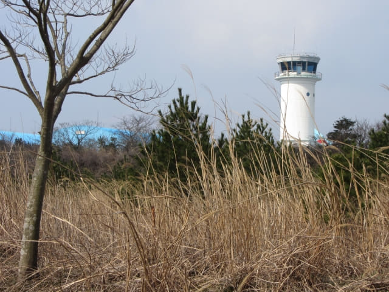

從橋來里鹿山路北面的出入口進入, 接著沿鹿山路朝西面一直走, 穿過一段荒涼的山野後, 景色漸漸優美, 馬路兩旁是排列整齊高高的松樹, 路旁是青蔥的田野。沿鹿山路走了二十多分鐘, 進入了加時里 (가시리 Gasi-ri), 加時里盛產韓國特有的短腿馬, 體型不大, 但十分強壯, 屬濟州土種馬。

繼續向前走。
大韓航空濟州飲水工廠 (대한항공제주생수공장)
經過一間工廠, 但不知道是什麼工廠? 稍後便知道了。
一直向前走, 發覺四周景色都是一樣的, 好像置身於迷離境界。
路旁的景色相當不錯的。
只管一直向前走。
哈哈~~~~~~ 沿鹿山路走了差不多一小時, 兩旁都是青蔥的油菜, 終於看到幾顆已開花的油菜花, 頓時興奮起來! 唉! 今年濟州島的天氣出現了什麼問題, 已經三月底了, 這裡的油菜花仍然不肯開花!
來到工廠另一邊的出口。看看手錶, 走了約半小時, 才來到另一個閘門, 這工廠佔地非常廣闊!
原來是大韓航空 (Korean Air) 自己開設的工廠 – 大韓航空濟州飲水工廠 (대한항공제주생수공장), 生產及供應給飛機上飲用的蒸餾水。
繼續往前走。
韓國航空航天大學飛行培訓學院 (한국항공대학교비행교육원)
突然間, 一個好像機場控制塔的建築物在右邊叢林上閃出, 已經來到韓國航空航天大學飛行培訓學院。
